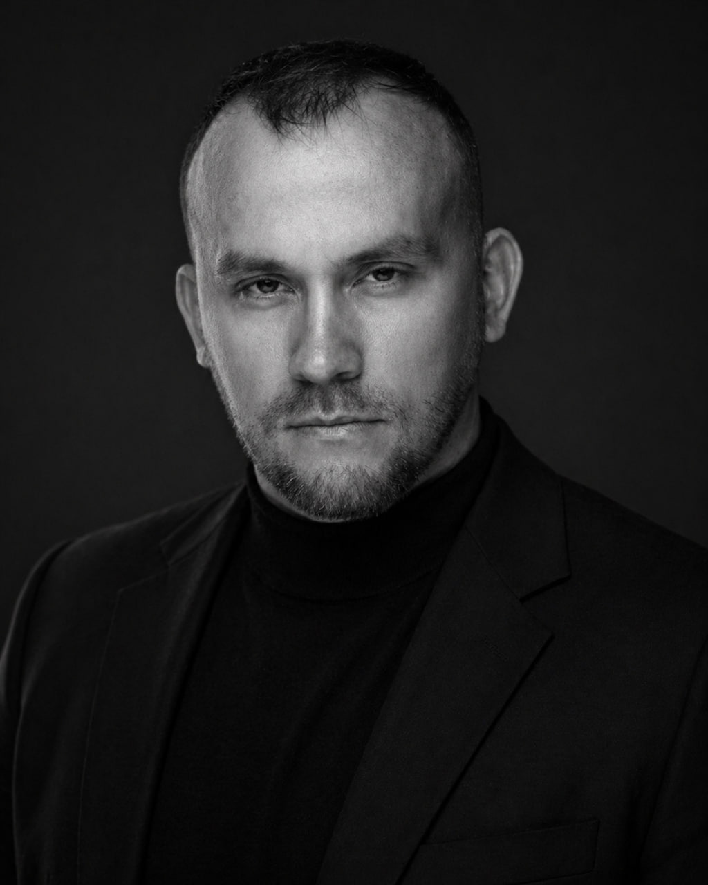

Тревога и напряжение
Когда мысли ходят по кругу, трудно выдерживать неопределенность, а попытки все контролировать только выматывают.
Клинический психолог · КПТ-специалист
Работаю с тревогой, отношениями и зависимым поведением. Специализируюсь на религиозной зависимости, культовой травме и восстановлении после сект и закрытых сообществ.
Профильная специализация
Более 10 лет работаю с зависимым поведением и последствиями участия в сектах, деструктивных религиозных организациях и тренинговых группах.
Помогаю действующим и бывшим участникам, а также их близким — от первых сомнений и подготовки к выходу до восстановления после группы.
С чем ко мне приходят
Когда мысли ходят по кругу, трудно выдерживать неопределенность, а попытки все контролировать только выматывают.
Повторяющиеся конфликты, страх близости или потери, чувство вины, сложность сказать «нет» и остаться в контакте.
Работа с тем, что стало способом быстро заглушать переживания и постепенно забирает свободу выбора.
Выход из религиозной зависимости, восстановление доверия к себе и жизни после опыта контроля или культовой травмы.

Как строится работа
КПТ помогает увидеть связь между мыслями, эмоциями и действиями — и проверять новые способы справляться с трудностями в жизни.
01Формулируем запрос и определяем, к какому результату идем
02Разбираем привычные реакции и находим альтернативы
03Проверяем новые способы в жизни и корректируем план
ФорматОнлайн
Стоимость3 500 ₽
СпециализацияКлинический психолог, КПТ
Заметки
О двенадцатишаговых программах, структуре и свободе выбора.
Читать ↗ ОтношенияО том, как хорошее может быть таким же трудным переживанием, как плохое.
Читать ↗ Культовая травмаО возвращении автономии без новой черно-белой системы.
Читать ↗Первый шаг
Выберите подходящий формат: записаться на консультацию или обратиться на горячую линию с вопросом о секте, группе или близком человеке.